La portada en el móvil
Hoy la portada mide casi 10.000 píxeles en el móvil. Entre los teléfonos, el carrusel, los textos de bienvenida y una foto grande por cada sección, el primer producto con precio aparece después de bajar nueve pantallas.
Al entrar
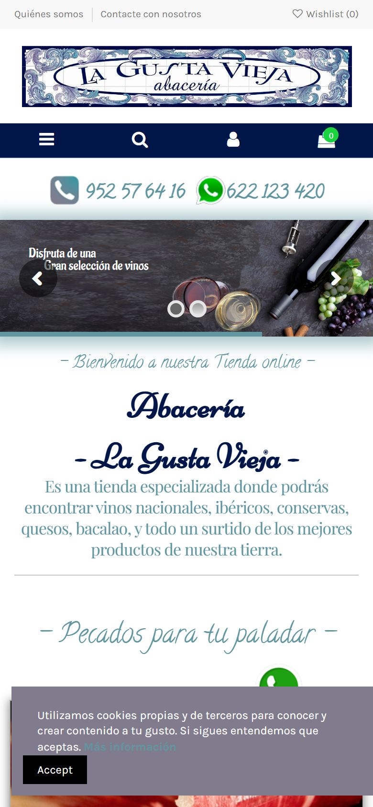
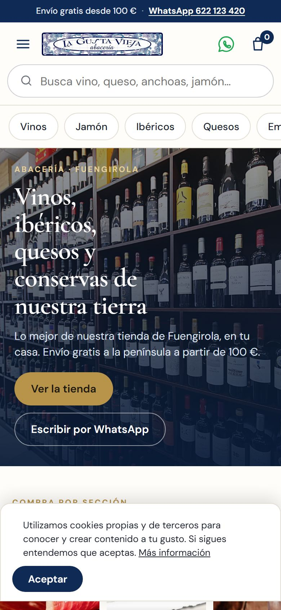
Bajando un poco
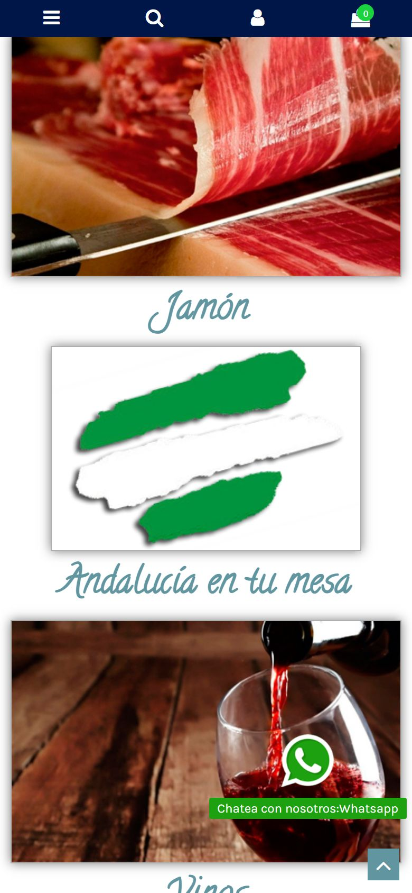
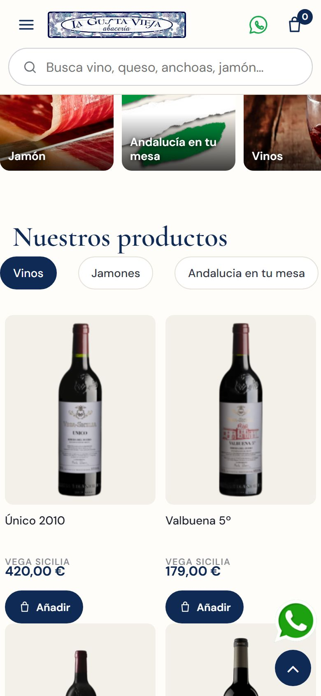
Un poco más abajo
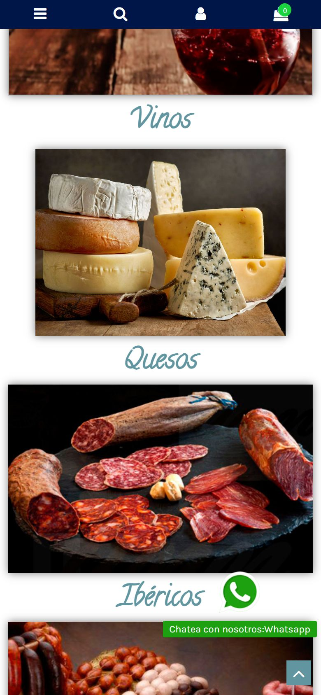
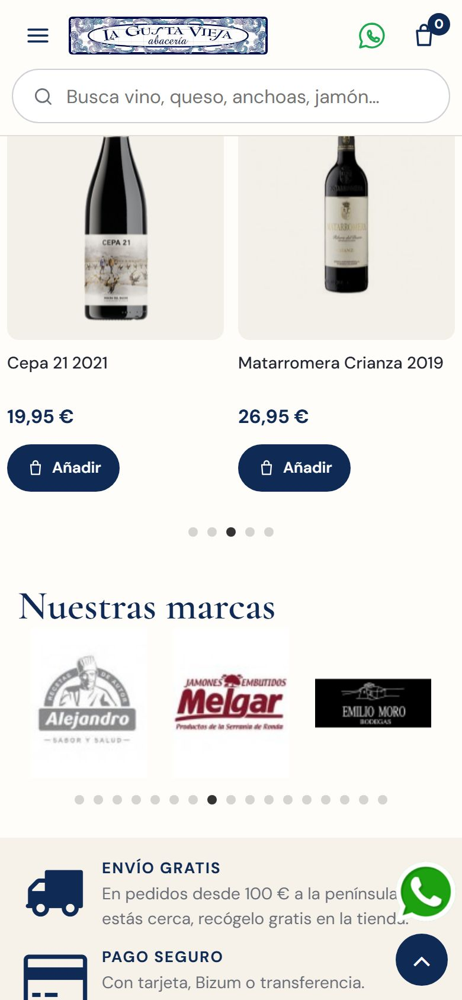
- Arriba, una franja con el envío gratis desde 100 € y tu WhatsApp.
- El logo, WhatsApp y la cesta en una sola fila, con el buscador siempre visible debajo.
- Las secciones (vinos, jamón, quesos…) en botones justo debajo, y también en fotos que se deslizan con el dedo.
- Letra nueva y los colores de tu logo: el azul, con crema y un toque dorado.
La sección de vinos
Hoy el aviso de agotado es una banda larga que se sale por la derecha de la pantalla, y la página entera se mueve de lado al tocarla. Además, los agotados salen mezclados con los que sí hay.
Al entrar
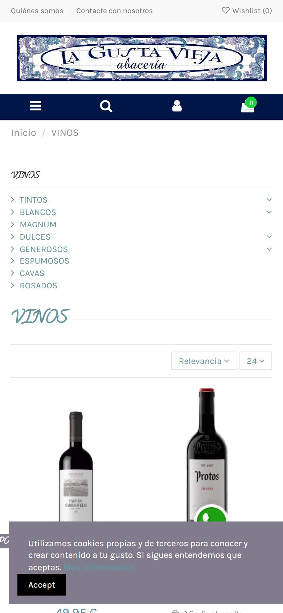
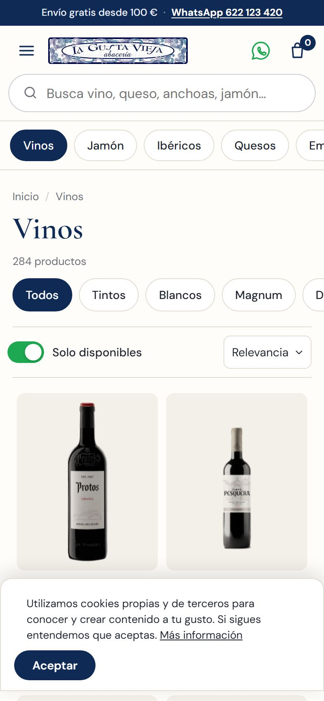
Los primeros vinos

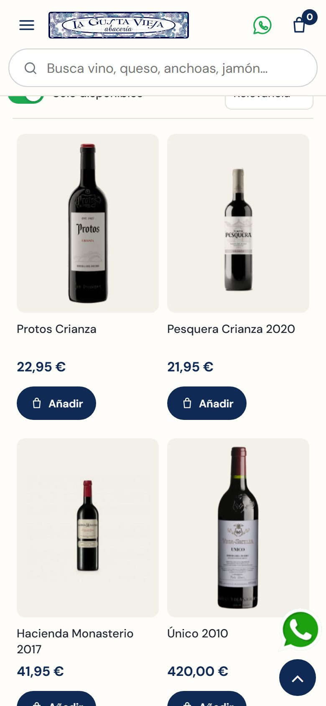
Los agotados
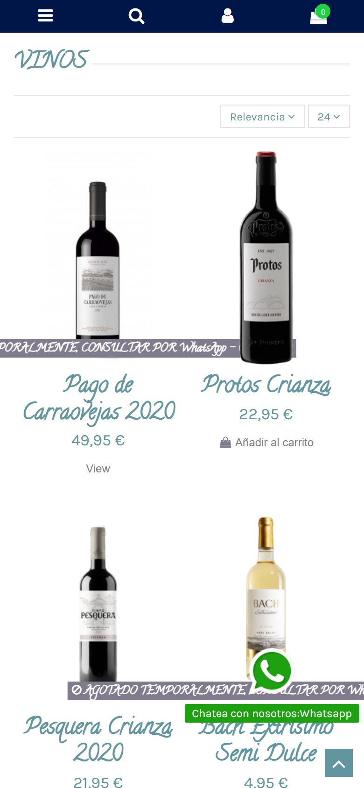
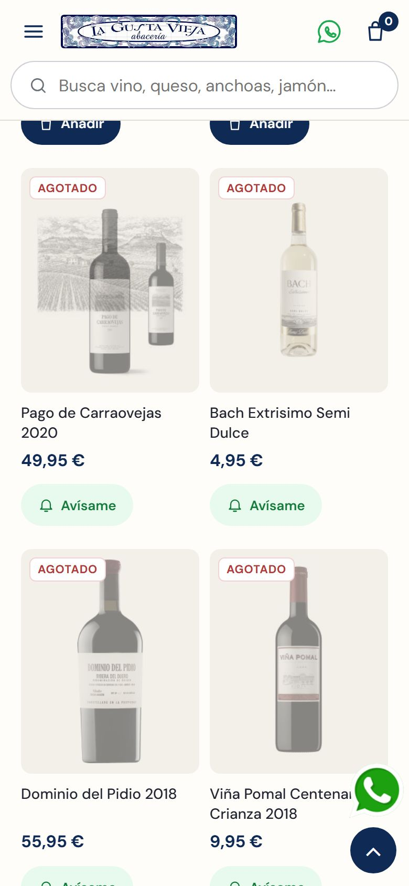
- Tintos, blancos, cavas y el resto de subsecciones como botones, arriba del todo.
- Un interruptor de «Solo disponibles» y el orden a la derecha.
- Primero lo que hay, y los agotados al final con su etiqueta y el botón «Avísame», que abre tu WhatsApp con el nombre del vino ya escrito.
- Cada vino con su foto sobre fondo crema, nombre, precio y el botón de añadir.
La ficha de producto
El nombre del producto pasa de la letra a mano a la letra nueva, el precio se ve más y el botón de compra destaca. Debajo va un recuadro con el envío y la recogida en tienda, para que nadie tenga que buscarlo.
Al entrar
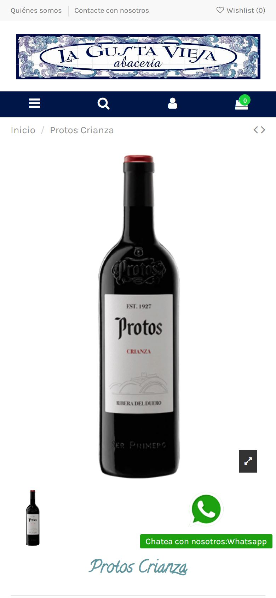
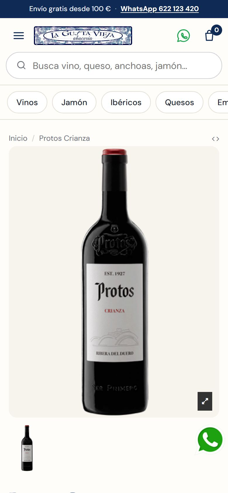
Precio y compra
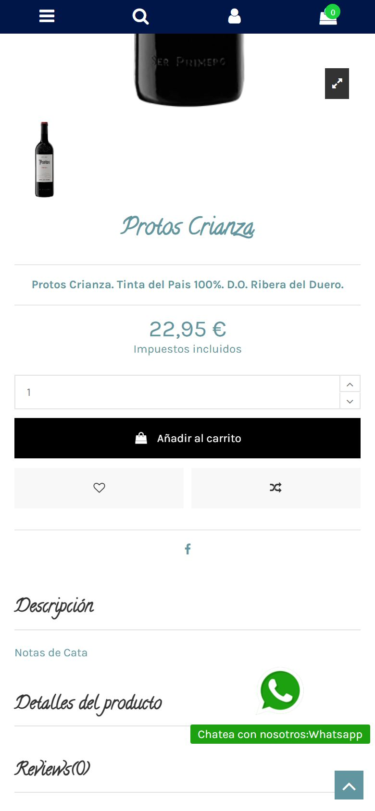
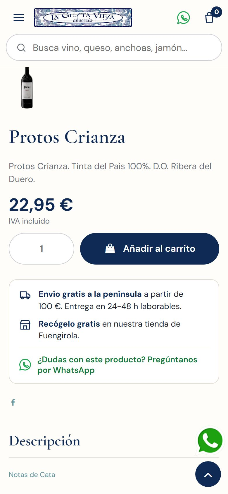
Un producto agotado
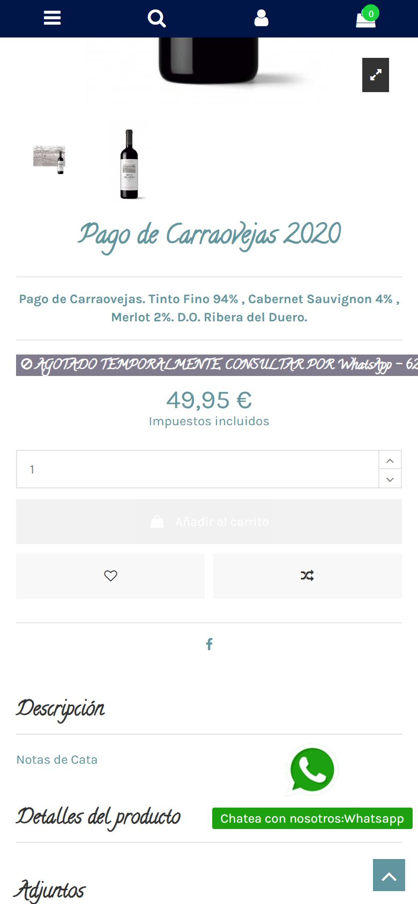
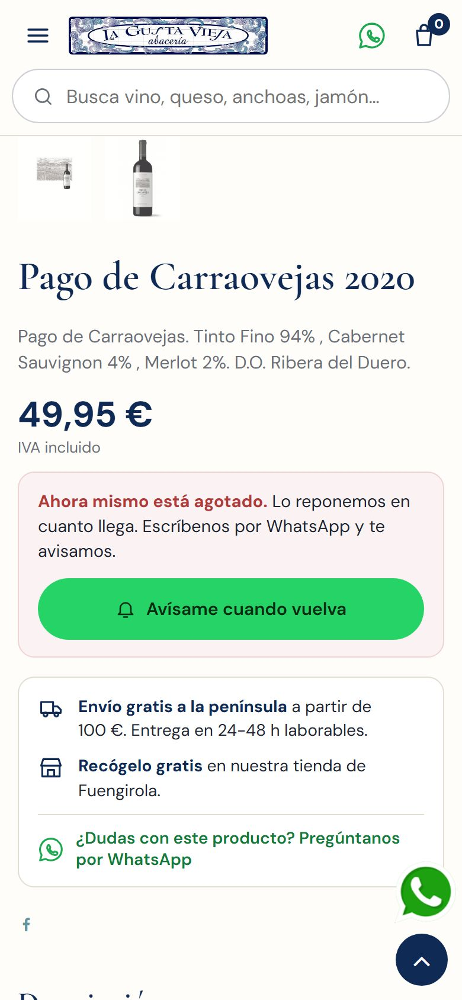
- Cantidad y «Añadir al carrito» en la misma fila.
- Envío gratis a la península desde 100 €, entrega en 24-48 h laborables y recogida gratis en la tienda de Fuengirola.
- Un enlace para preguntar por WhatsApp sobre ese producto.
- Si está agotado, en lugar del botón gris que no se puede pulsar sale el aviso y «Avísame cuando vuelva».
En el ordenador
El mismo estilo en pantalla grande: buscador en el centro de la cabecera y las secciones en una barra azul debajo.
Portada
Arrastra la barra para comparar
Las secciones de la portada
Sección de vinos
Ficha de producto
¿Te gusta este estilo?
Si te gusta, lo montamos en tu tienda sobre la copia de pruebas y te la enseñamos antes de publicar nada. Si prefieres otro color, otra letra o cambiar algo de la portada, dínoslo ahora, antes de empezar.
Son capturas de prueba: el buscador, la cesta y los botones todavía no funcionan con este estilo. Las fotos, los productos y los precios son los de tu tienda hoy.